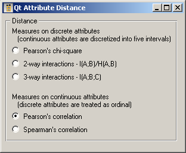
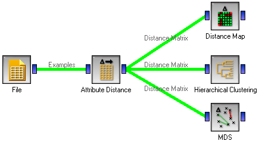

This is documentation for Orange 2.7. For the latest documentation, see Orange 3.
Attribute Distance¶

Computes distances between examples in the data set
Signals¶
- Inputs:
- Examples
A list of examples
- Outputs:
- Distance Matrix
A matrix of attribute distances
Description¶
Widget Attribute Distances computes the distances between the attributes in the data sets. Don’t confuse it with a similar widget for computing the distances between examples.
Since the widget cannot compute distances between discrete and continuous attributes, all attributes are first either discretized, by splitting the attribute into four quartiles, or “continuized” by treating any discrete attributes as ordinal with values equivalent to 0, 1, 2, 3... For other, possibly better methods of discretization/continuization, see widgets Discretize and Continuize.
The two kinds of attributes then have different measures of distance.
For discrete attributes, the distance can be computed as Pearson's chi-square, where the more the two attributes are dependent, the closer they are. The measure actually returns the p-value of the common chi-square test of independence. The other two measures are as defined by Aleks Jakulin in his work on attribute interactions: 2-way interaction is defined as I(A;B)/H(A,B) and 3-way interaction is I(A;B;C), respectively.
Examples¶
This widget is an intermediate widget: it shows no user readable results and its output needs to be fed to a widget that can do something useful with the computed distances, for instance the Distance Map, Hierarchical Clustering to cluster the attributes, or MDS to visualize the distances between them.
